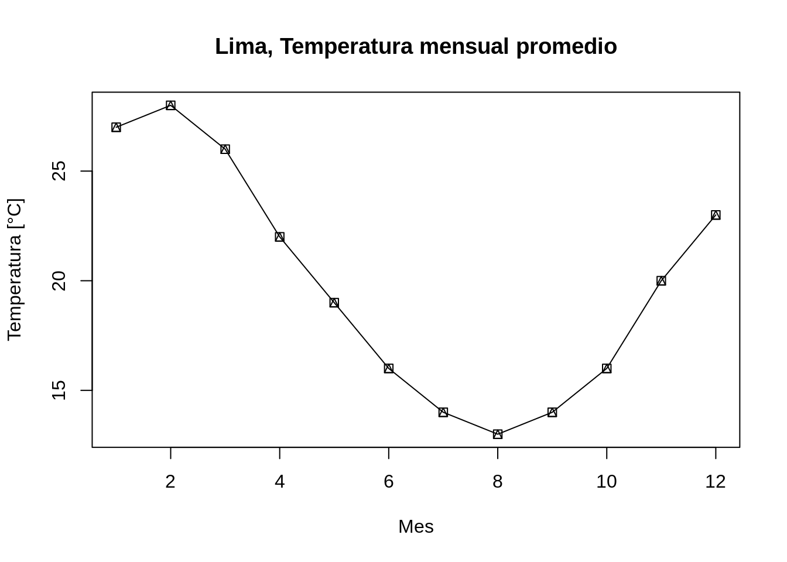

3 Programando con R
3.1 Operadores relacionales y lógicos
Los operadores de comparación o relacionales están diseñados para comparar objetos. El resultado de estas comparaciones son de tipo booleano. La siguiente tabla resume los operadores relacionales de R.
| Operador | Resultado | Comparación |
|---|---|---|
x > 3 |
c(F, F, F, T, T) |
Mayor que |
x >= 3 |
c(F, F, T, T, T) |
Mayor o igual que |
x < 3 |
c(T, T, F, F, F) |
Menor que |
x <= 3 |
c(T, T, T, F, F) |
Menor o igual que |
x == 3 |
c(F, F, T, F, F) |
Igual a |
x != 3 |
c(T, T, F, T, T) |
Diferente de |
x = 3 |
Igual que <- |
Se puede utilizar %in% para preguntar si uno o varios elementos se encuentran en otro, devolviendo lógicos.
Los operadores booleanos o lógicos en R se utilizan para especificar múltiples condiciones entre objetos. Estas comparaciones devuelven valores TRUE o FALSE.
Puedes combinar evaluaciones lógicas con &, |, xor, !, any, y all
| Operador | Evaluación |
|---|---|
a & b |
Tanto a como b son VERDADEROS |
a | b |
Al menos uno de a y b es VERDADERO (o) |
xor(a, b) |
a es VERDADERO o b es VERDADERO, pero no ambos |
!a |
No a (VERDADERO va a FALSO, FALSO va a VERDADERO) |
any(a, b, c) |
Al menos uno de a, b o c es VERDADERO |
all(a, b, c) |
Cada uno de a, b y c es VERDADERO |
3.2 Consultas lógicas
Combinar pruebas lógicas con subconjuntos es una práctica común
## # A tibble: 8 x 10
## carat cut color clarity depth table price x y z
## <dbl> <ord> <ord> <ord> <dbl> <dbl> <int> <dbl> <dbl> <dbl>
## 1 1.07 Ideal F SI2 61.6 56 4954 0 6.62 0
## 2 1 Very Good H VS2 63.3 53 5139 0 0 0
## 3 1.14 Fair G VS1 57.5 67 6381 0 0 0
## 4 1.56 Ideal G VS2 62.2 54 12800 0 0 0
## 5 1.2 Premium D VVS1 62.1 59 15686 0 0 0
## 6 2.25 Premium H SI2 62.8 59 18034 0 0 0
## 7 0.71 Good F SI2 64.1 60 2130 0 0 0
## 8 0.71 Good F SI2 64.1 60 2130 0 0 0## # A tibble: 5 x 10
## carat cut color clarity depth table price x y z
## <dbl> <ord> <ord> <ord> <dbl> <dbl> <int> <dbl> <dbl> <dbl>
## 1 4.01 Premium I I1 61 61 15223 10.1 10.1 6.17
## 2 4.01 Premium J I1 62.5 62 15223 10.0 9.94 6.24
## 3 4 Very Good I I1 63.3 58 15984 10.0 9.94 6.31
## 4 5.01 Fair J I1 65.5 59 18018 10.7 10.5 6.98
## 5 4.5 Fair J I1 65.8 58 18531 10.2 10.2 6.723.3 Control de flujo
¿Quieres saltar este capítulo? Hazlo si puedes responder estas preguntas.
- Cuál es la diferencia entre
ifeifelse()? - En el siguiente código, cuál será el valor de
ysixesTRUE? Y cuál sería sixesFALSE? Y cuál sixesNA?
- ¿Qué retorna de
switch("x", x = , y = 2, z = 3)?
Los comandos de control de flujo son una forma de modificar la secuencia de ejecución del código. Existen 2 herramientas principales de flujo de control: Opciones y bucles. Las opciones, como las declaraciones condicionales if y las llamadas switch(), permiten ejecutar código diferente según la entrada. Los bucles, como for y while, le permiten ejecutar código repetidamente, generalmente con opciones cambiantes.
3.3.1 Condicionales (if, else)
La toma de decisiones es una parte importante de la programación. Esto se puede lograr en la programación R usando la nomenclatura condicional if else.
- Si expresion es
TRUE, la instrucción se ejecuta. Pero si esFALSO, no pasa nada. - Aquí, expresion puede ser un vector lógico o numérico, pero solo se tiene en cuenta el primer elemento.
- En el caso del vector numérico, cero se toma como
FALSO, el resto como VERDADERO. - La parte else es opcional y solo se evalúa si expresion es
FALSE. - Es importante tener en cuenta que else debe estar en la misma línea que las llaves de cierre de la instrucción if.
x <- 0
if (x < 0) {
print("Numero negativo")
}else if (x > 0) {
print("Numero positivo")
} else {
print("Cero")
}## [1] "Cero"Comparación entre Python y R
## PYTHON
temp = [15, 22, 30]
suelo= ["seco", "humedo", "charcos"]
valtemp = temp[0]
valsuelo= suelo[2]
if 12<= valtemp < 22 and valsuelo =="seco":
print("Cielo despejado")
elif valtemp == 22 or valsuelo == "humedo":
print("lluvia leve")
elif valtemp > 22 and valsuelo=="charcos":
print("lluvia severa")
else:
print(" Faltan datos")## Faltan datos## R
temp <- c(15, 22, 30)
suelo <- c("seco", "humedo", "charcos")
valtemp <- temp[1]
valsuelo <- suelo[3]
if (valtemp %in% 12:22 & valsuelo =="seco") {
print("\nCielo despejado")
} else if (valtemp == 22 | valsuelo == "humedo"){
print("\nlluvia leve")
} else if (valtemp > 22 & valsuelo=="charcos"){
print("\nlluvia severa")
} else {
print("\nFaltan datos")
}## [1] "\nFaltan datos"3.3.2 Bucles (while, for)
Los bucles son una de las estructuras fundamentales en la programación. Los bucles permiten iterar sobre cada elemento en una secuencia, uno a la vez, y hacer algo con esos elementos.
3.3.2.1 for
Un bucle for es muy valioso cuando necesitamos iterar sobre una lista de elementos o un rango de números. Loop se puede usar para iterar sobre una lista, marco de datos, vector, matriz o cualquier otro objeto. Los tirantes y el corchete son obligatorios.
# Creando un vector de frutas
frutas <- c('Apple', 'Orange', 'Passion fruit', 'Banana')
# Declarando el bucle for
for ( i in frutas){
print(i)
}## [1] "Apple"
## [1] "Orange"
## [1] "Passion fruit"
## [1] "Banana"3.3.2.2 while
Un bucle while es una declaración que continúa ejecutándose mientras se cumple una condición. La sintaxis para un ciclo while es la siguiente:
# creando la expresión con valor 1
inicio <- 1
# Creando el loop
while (inicio <= 5){
# Ver donde estamos
cat('Este es el ciclo número ', inicio)
# Agregar 1 a la variable inicio despues de cada iteracion
inicio <- inicio + 1
print(inicio)
}## Este es el ciclo número 1[1] 2
## Este es el ciclo número 2[1] 3
## Este es el ciclo número 3[1] 4
## Este es el ciclo número 4[1] 5
## Este es el ciclo número 5[1] 63.3.3 Controles de flujo (Break, continue, tryCatch, options)
3.4 Funciones
Una función, en un entorno de programación, es un conjunto de instrucciones. Un programador crea una función para evitar repetir la misma tarea o reducir la complejidad.
Una función debería ser:
- Escrito para llevar a cabo una tarea específica
- Puede o no incluir argumentos
- Contener un cuerpo
- Puede o no devolver uno o más valores
Ejemplo:
a <- 5
b <- 6
suma <- function(valor1, valor2){
resultado <- valor1 + valor2
return(resultado)
}
suma(a, b)## [1] 113.4.1 Ejercicios
3.4.1.1 Ejercicio 1:
Cree una función que, dado un vector, imprima por pantalla la media y la desviación estándar, opcionalmente también imprimirá la mediana.
3.4.1.2 Ejercicio 2:
- Agregar un argumento adicional, llamado
print_info, que seaTRUEpor defecto - Crea una condicional alrededor de la función
print(), la cual debe ser ejecutada sólo siprint_infoesTRUE - Prueba el código
3.5 Funciones de la familia apply
Los apply: apply, tapply, lapply, sapply, vapply, rapplyEntonces, ¿cuáles son estas maravillosas funciones de aplicación y cómo funcionan? Creo que la mejor manera de descubrir cualquier cosa en R es aprender mediante la experimentación, utilizando datos y funciones vergonzosamente triviales.
If you fire up your R console, type “??apply” and scroll down to the functions in the base package, you’ll see something like this:
3.5.1 apply():
Crea resúmenes sobre los ejes. 1: Sobre filas, 2: Sobre columnas
3.5.2 tapply()
Esta función trabaja sobre matrices o tablas desiguales y usa una variable de agrupamiento o índice.
3.5.3 lapply()
Esta función es aplicable a vectores y listas y permite generar resúmenes como listas
3.5.4 sapply()
Crea resúmenes como vector o tabla
3.5.5 vapply()
Similar al anterior, pero devuelve una salida predeterminada (puede ser más práctico)
3.5.6 rapply()
Similar al anterior, per devuelve una salida que conserva la estructura original
- Para profundizar, se recomienda seguir esta Fuente
3.6 Gráficos
# Scatter plots
x <- 1:12
y <- c(27, 28, 26, 22, 19, 16, 14, 13, 14, 16, 20, 23)
estaciones <- c(rep("verano",2), rep("otoño",3), rep("invierno",3), rep("primavera",3), "verano")
df <- data.frame(x, y, estaciones)
plot(df$x, df$y, type="o", pch=14,xlab = "Mes",
ylab = "Temperatura [°C]", main="Lima, Temperatura mensual promedio")
plot(df$x, df$y, type="o", pch=20, xlab="Mes",
ylab="Temperatura [°C]", main="Lima, Temperatura mensual promedio", col = "#F47E40")
df["colores"] = c(rep("black",2), rep("green",3), rep("red",3), rep("blue",3), "red")
legend("top", legend = levels(factor(estaciones)),
col = c("black", "green", "red", "blue"),
pch = c(16, 17, 18) )data(cars)
plot(cars$speed, cars$dist, xlab = "Velocidad", ylab = "Distancia", main = "Velocidad vs distancia")
# Histogram
# hist(cars$speed)
# hist(cars$speed, breaks = 10)
hist(cars$dist, freq = T, col = "skyblue", labels = T)
3.7 Estilo tidyverse
Primero necesitarás instalar algunos paquetes de R. Un paquete R es una colección de funciones, datos y documentación que amplía las capacidades de R base. El uso de paquetes es clave para el uso exitoso de R. La mayoría de los paquetes que aprenderá en este apartado son parte del llamado tidyverse. Los paquetes de tidyverse comparten una filosofía común de programación de datos y R, y están diseñados para trabajar juntos de forma natural.
Puedes instalar tidyverse completo con una sola línea de código:
En su propia computadora, escriba esa línea de código en la consola y luego presione Entrar para ejecutarlo. R descargará los paquetes de CRAN y los instalará en su computadora. Si tiene problemas con la instalación, asegúrese de estar conectado a Internet y de que https://cloud.r-project.org/ no esté bloqueado por su firewall o proxy.
No podrá utilizar las funciones, los objetos y los archivos de ayuda de un paquete hasta que lo cargue con library(). Una vez que haya instalado un paquete, puede cargarlo con la función library():
## Warning: package 'tidyverse' was built under R version 4.0.5## -- Attaching packages --------------------------------------- tidyverse 1.3.1 --## v ggplot2 3.3.3 v purrr 0.3.4
## v tibble 3.1.1 v dplyr 1.0.5
## v tidyr 1.1.3 v stringr 1.4.0
## v readr 1.4.0 v forcats 0.5.1## Warning: package 'ggplot2' was built under R version 4.0.4## Warning: package 'tibble' was built under R version 4.0.5## Warning: package 'tidyr' was built under R version 4.0.5## Warning: package 'readr' was built under R version 4.0.5## Warning: package 'dplyr' was built under R version 4.0.5## Warning: package 'forcats' was built under R version 4.0.5## -- Conflicts ------------------------------------------ tidyverse_conflicts() --
## x dplyr::filter() masks stats::filter()
## x dplyr::lag() masks stats::lag()Esto le indica que tidyverse está cargando los paquetes ggplot2, tibble, tidyr, readr, purrr y dplyr. Estos consideran los núcleo del tidyverse porque los usará en casi todos los análisis.
Los paquetes del tidyverse cambian con bastante frecuencia. Puede ver si hay actualizaciones disponibles y, opcionalmente, instalarlas, ejecutando tidyverse_update().
Toma nota del mensaje de conflictos que se imprime cuando cargas el tidyverse. Te dice que dplyr sobrescribe algunas funciones en base R. Si desea usar la versión base de estas funciones después de cargar dplyr, deberá usar sus nombres completos: stats::filter() y stats::lag()
3.7.1 Data Transformation con dplyr
La visualización es una herramienta importante para la generación de información, pero es raro que obtenga los datos exactamente en la forma correcta que necesita. A menudo, necesitará crear algunas variables o resúmenes nuevos, o tal vez solo desee cambiar el nombre de las variables o reordenar las observaciones para que sea un poco más fácil trabajar con los datos. Aprenderá a hacer todo eso (¡y más!) en este apartado, que le enseñará cómo transformar sus datos utilizando el paquete dplyr y un nuevo conjunto de datos sobre vuelos que parten de la ciudad de Nueva York en 2013.

En este capítulo, nos centraremos en cómo usar el paquete dplyr, otro miembro central de tidyverse. Ilustraremos las ideas clave usando datos del paquete nycflights13 y usar ggplot2 para ayudarnos a comprender los datos.
## Warning: package 'nycflights13' was built under R version 4.0.53.7.1.1 nycfights13
Para explorar los verbos básicos de manipulación de datos de dplyr, usaremos nycflights13::flights. Este marco de datos contiene los 336,776 vuelos que partieron de la ciudad de Nueva York en 2013. Los datos provienen de la oficina Oficina de Estadísticas de Transporte de EE. UU, y están documentados en ?flights:
## # A tibble: 336,776 x 19
## year month day dep_time sched_dep_time dep_delay arr_time sched_arr_time
## <int> <int> <int> <int> <int> <dbl> <int> <int>
## 1 2013 1 1 517 515 2 830 819
## 2 2013 1 1 533 529 4 850 830
## 3 2013 1 1 542 540 2 923 850
## 4 2013 1 1 544 545 -1 1004 1022
## 5 2013 1 1 554 600 -6 812 837
## 6 2013 1 1 554 558 -4 740 728
## 7 2013 1 1 555 600 -5 913 854
## 8 2013 1 1 557 600 -3 709 723
## 9 2013 1 1 557 600 -3 838 846
## 10 2013 1 1 558 600 -2 753 745
## # ... with 336,766 more rows, and 11 more variables: arr_delay <dbl>,
## # carrier <chr>, flight <int>, tailnum <chr>, origin <chr>, dest <chr>,
## # air_time <dbl>, distance <dbl>, hour <dbl>, minute <dbl>, time_hour <dttm>
Es posible que observe que este dataframe se imprima un poco diferente de otros dataframe que podría haber usado en el pasado: solo muestra las primeras filas y todas las columnas que caben en una pantalla. (Para ver el conjunto de datos completo, puede ejecutar View(flights), que abrirá el conjunto de datos en el visor de RStudio). Se imprime de manera diferente porque es un tibble. Tibbles son dataframe, pero ligeramente modificados para que funcionen mejor en tidyverse. Por ahora, no necesita preocuparse por las diferencias; volveremos a tibbles con más detalle en la Parte II del libro de Hadley Wickham y Garrett Grolemund (2017).
También puede haber notado la fila de abreviaturas de tres (o cuatro) letras debajo de los nombres de las columnas. Estos describen el tipo de cada variable:
- int significa enteros.
- dbl significa dobles o números reales.
- chr significa vectores de caracteres o cadenas.
- dttm significa fecha y hora (una fecha + una hora).
Hay otros tres tipos comunes de variables que no se utilizan en este conjunto de datos, pero los encontrará más adelante en el libro de libro de Hadley Wickham y Garrett Grolemund (2017):
- lgl significa vectores lógicos que contienen solo VERDADERO o FALSO.
- fctr significa factores, que R usa para representar categóricos variables con valores posibles fijos.
- date representa fechas.
3.7.1.2 dplyr Basics
En este capítulo, aprenderá las cinco funciones clave de dplyr que le permiten resolver la gran mayoría de sus desafíos de manipulación de datos:
- Elija observaciones por sus valores (filter()).
- Reordenar las filas (arrange()).
- Elija las variables por sus nombres (select()).
- Crear nuevas variables con funciones de variables existentes (mutate()).
- Colapsar muchos valores en un solo resumen (summarize())
Todos estos se pueden usar junto con group_by (), que cambia el alcance de cada función de operar en todo el conjunto de datos a operar en él grupo por grupo. Estas seis funciones proporcionan los verbos para un lenguaje de manipulación de datos.
Todos los verbos funcionan de manera similar:
- El primer argumento es un marco de datos.
- Los argumentos siguientes describen qué hacer con el marco de datos, utilizando los nombres de las variables (sin comillas).
- El resultado es un nuevo marco de datos.
Juntas, estas propiedades hacen que sea fácil encadenar varios pasos simples para lograr un resultado complejo. Profundicemos y veamos cómo funcionan estos verbos.